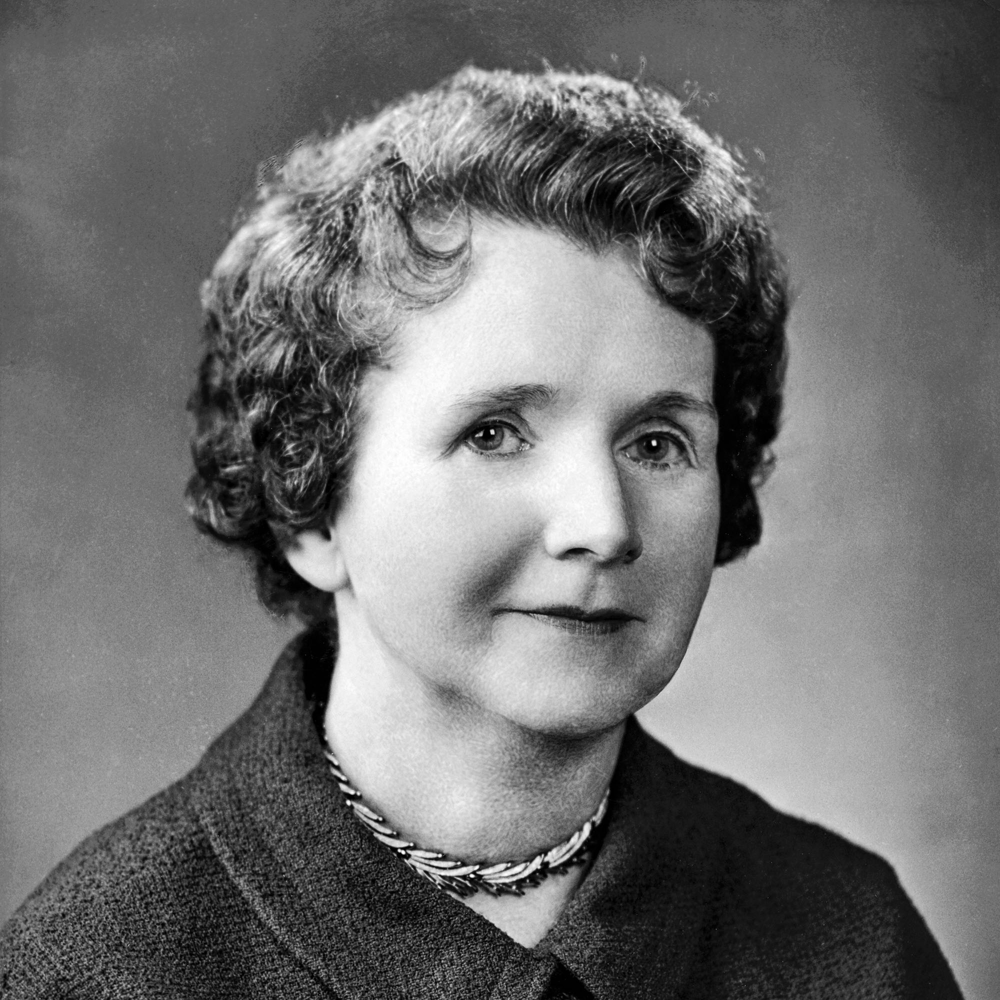
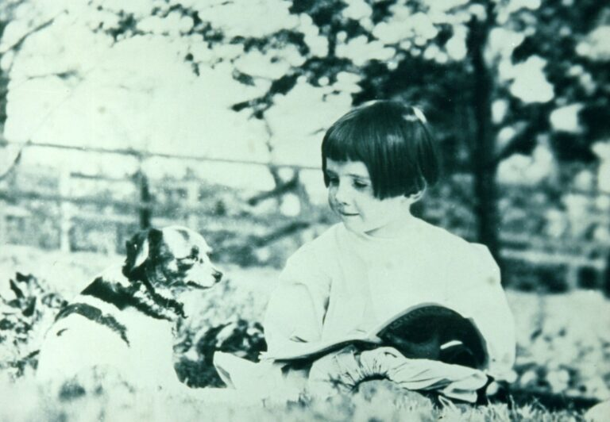
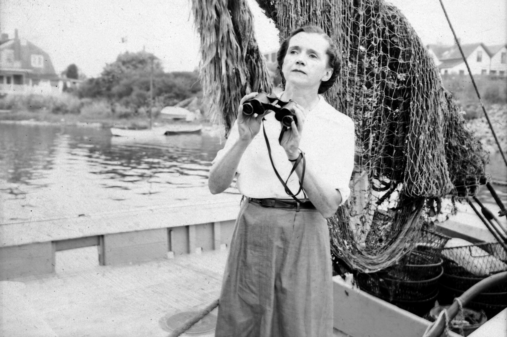
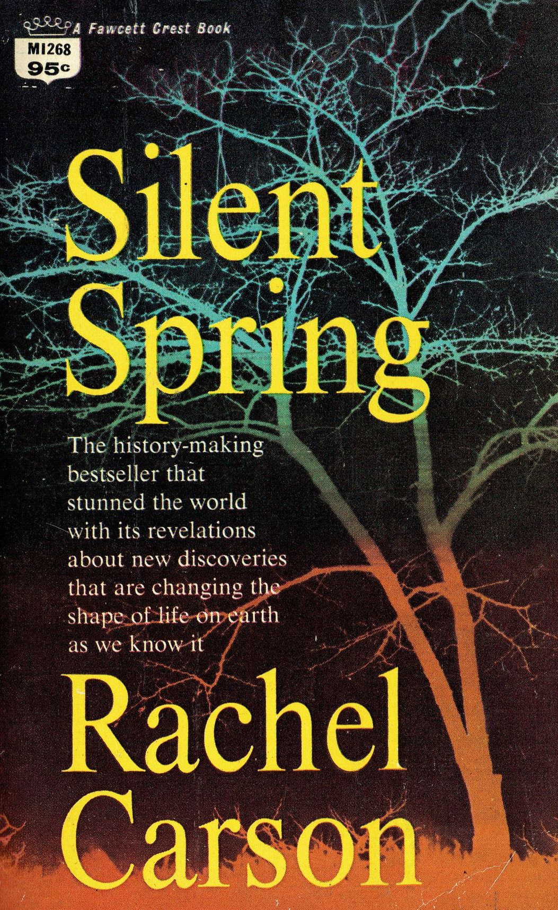

Rachel Carson was born on May 27th, 1907 in Springdale, Pennsylvania to Maria McLean and Robert Carson, along with her two siblings, Marian and Robert.
Ms.Carson had developed a fond interest in the natures when she was young. Her mother would bring her outdoors often, which exposed Rachel to various beauties of flora and fauna.
Carson loved reading, most specifically regarding animals and the ocean.

Rachel began writing when she was around 8. At 11, she forwarded her own story to the St. Nicholas magazine for children titled, "A Battle in the Clouds" based off letters her brother sent to her while serving in the Army Air Service in France. The magazine loved her story so much they published it three years in a row.
Rachel graduated from the prestigious Parnassus High School at the top of her class in May, 1925. She then pursued her education in English at the Pennsylvania College for Women, but later switched to biology. She still held her interest in writing by participating in her college newspaper.
Rachel had done so well in school that she was one of three people to receieve a magna cum laude. Despite her tuition not being fully paid off, benefactors paid for it all because of her prowess.
She continued to pursue her education in zoology and genetics at the Johns Hopkins University in Baltimore, Maryland. She graduated with a master's degree in zoology in 1932 at age 25.

Rachel went on to work for the U.S. Bureau of Fisheries writing radio scripts. Her literature was so profound that her contemporaries said she was better than her predecessors. And in 1949, she was appointed Cheif Editor of Publications for the Fish and WIldlife Service.
Her second book, "The Sea Around Us," recieved the National Book Award for Nonfiction, the John Burroughs Medal, and became a best seller.
However, her most influential book was "Silent Spring," released on September 1962 at the height of many social movements, such as women's rights, racial inequality, and the Vietnam War.

Carson was furious about the ongoing chemical contamination in American ecosystems and the lack of attention towards those issues.
Her book detailed the connection between all of those social movements with hers, urging readers to care about more than one national issue.
National outrage erupted after the release that President John F. Kennedy addressed the worries. And in 1972, a main component in pesticides which had been poisoning the environment for a long time called DDT, was banned in America.
Rachel had died of a heart attack on April 14th, 1964, following multiple breast cancer surgeries and suffering from a heart disease known as angina caused by radiation exposure. She never got to see how the world changed under the influence of her book.
But this webpage was designed to honor and maintain what she believed in; to spark inspiration in future environmentalist, activists, marine biologists, or writers to fight for what they think is right.